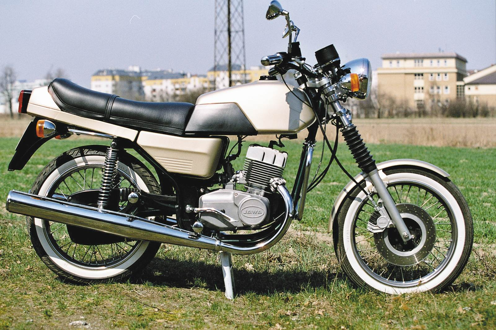

- Liczba cylindrów: 2.
- Skok tłoka: 65 mm.
- Średnica cylindra: 58 mm.
- Pojemność skokowa: 343,47 cm³
- Stopień sprężenia: 10,2.
- Moc maksymalna: 19 kW (26KM) przy 5500 obr./min.
- Maksymalny moment obrotowy: 33 Nm przy 5000 obr./min.
Model ten cechował się sportowym wyglądem, zmodernizowanym silnikiem, nową instalacją elektryczną.
Silnik jest dalszym usprawnieniem silników z lat 50 XX w. Główną zmianą było wprowadzenie 4 łożysk na wale. Głowice i cylindry tym razem trzymały się na 4 szpilkach. Cylindry posiadały 4 kanały płuczące i jeden większy kanał wydechowy – w poprzednim modelu były 2 kanały płuczące i 2 kanały wydechowe. Cylindry poprzedniego modelu były w całości żeliwne, w Jawie TS zastosowano aluminiowe cylindry z żeliwną tuleją co znacznie poprawiło odprowadzenie ciepła. Obniżyło też masę silnika. Zmieniono kształt zewnętrzny silnika. Silnik zaopatrzono w nowy gaźnik (Jikov 2928 CE) o średnicy gardzieli 28 mm z komorą pływaka umieszczoną centralnie dzięki czemu nie występowało zalewanie silnika w czasie ostrych przechyłów.
Instalacja elektryczna przeszła gruntowne zmiany. Prądnicę zastąpił alternator trójfazowy synchroniczny o mocy 210 W i napięciu znamionowym 12 V.
Instalacja zapłonowa pozostała praktycznie bez zmian – zastosowano zapłon oparty na dwóch przerywaczach. Zmiana jedynie dotyczyła napięcia cewek zapłonowych (12 V).